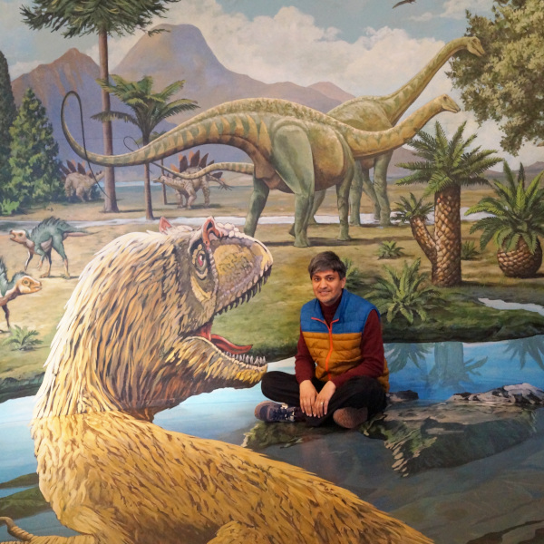

| 
|
AboutI work at Seagate Technology. My research area has primarily been in the areas of signal processing, digital communications and information theory with applications to data storage. Currently, my research focus has been in DNA sequencing with applications to DNA storage, computational biology and bioinformatics algorithms. I am also interested in probabilistic inference, machine learning, compressive sensing, natural language processing, and quantum information science. I obtained my Ph.D. in Electrical Engineering from the University of Illinois where I worked with Prof. Yoram Bresler. The focus of my dissertation was sparse nonuniform minimum-rate sampling and interpolation of multiband signals with applications to Fourier imaging, in an area that is now better known as compressive sensing. I was a post-doc at Bell Labs and Harvard University where I worked on MIMO wireless communications, OFDM, and multiple description coding. |